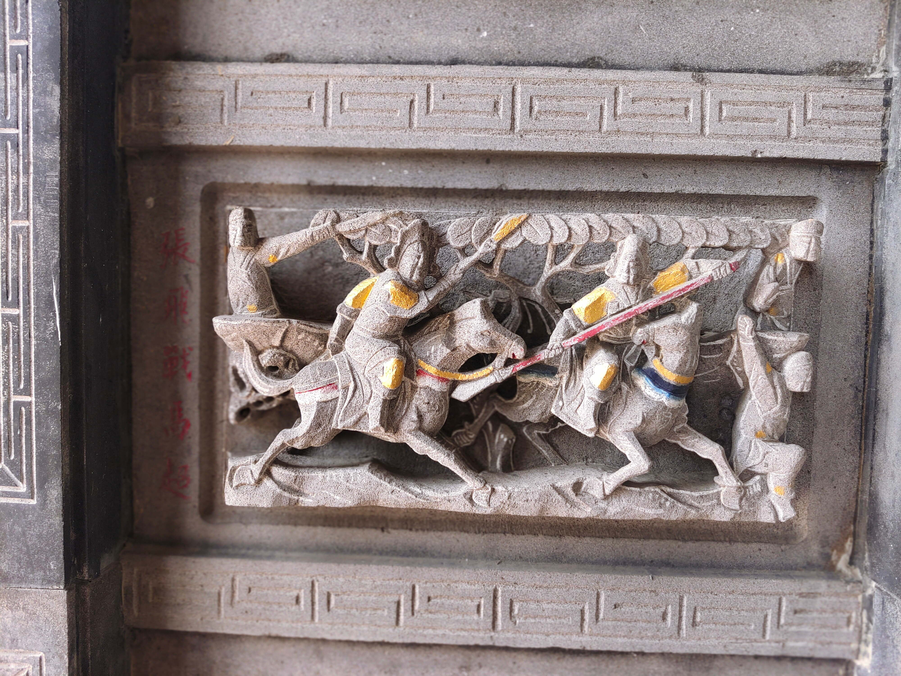

張飛戰馬超
會說話的石頭

圖 張飛戰馬超
212年，劉璋邀劉備入益州協助防禦漢中的張魯軍。劉備進屯葭萌關（在今四川廣元市昭化區）。但當劉璋發現下屬張松與劉備共謀奪取益州後，劉備和劉璋最終反目。 劉璋聯合張魯，對抗劉備。張魯派馬超率軍攻劉備於葭萌關。馬超在那裡遭遇張飛並發生決鬥。兩人酣戰許久，都未能壓倒對方，各自歸營。劉備不希望義弟或馬超受傷，諮詢諸葛亮。諸葛亮提出像馬超這樣的猛將如能效命劉備，會對劉備有很大幫助。劉備因而派李恢說服馬超倒戈。同時，劉備派人去漢中散布不利於馬超的流言，使張魯對馬超起疑。馬超得知張魯生疑，計劃叛投劉備，更何況劉備是他不共戴天之敵曹操的敵人。 當劉備收到馬超願意效命的消息時，正圍劉璋於州治成都。劉備高興且急切接受了馬超的協助，將軍隊和糧食發往馬超營。馬超率軍從北面攻成都。劉璋不料馬超有此舉動，震驚了。不久，劉備謀士簡雍說服劉璋投降，劉備控制了益州。劉備在漢中之戰擊敗曹操後，自稱「漢中王」，馬超成為五虎將之一。
資料來源： https://reurl.cc/Ompjz7